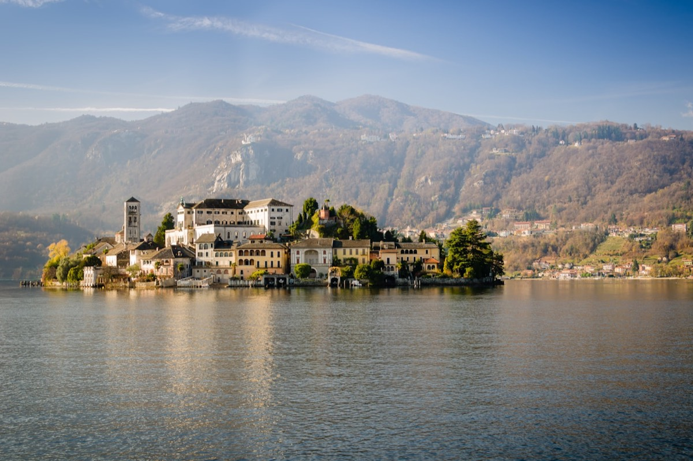

San Giulio nacque nel 330 d.C. sull'isola greca di Egina. Aveva un fratello, San Giuliano, che lo accompagnò nei suoi viaggi per il mondo. Dopo gli scontri con i pagani ostili ai cristiani e le dispute con i primi cristiani sull'interpretazione della dottrina, lasciò Egina alla volta dell'Italia.

Durante il suo pellegrinaggio in Italia ricevette l'autorizzazione imperiale a demolire i templi pagani e a costruire al loro posto chiese cristiane. Giunto nella zona del Lago d'Orta, rimase incantato dalla bellezza solitaria di un'isola e decise di edificarvi una chiesa in onore di Cristo.
Quando chiese di essere trasportato sull'isola in barca, incontrò un netto rifiuto: gli abitanti del posto sostenevano che fosse infestata da draghi, serpenti e pericolose creature giganti. Fu allora che San Giulio compì il suo primo miracolo: stese il mantello sull'acqua, vi salì sopra e gli ordinò di portarlo sano e salvo fino all'isola.
Una volta arrivato, scacciò i mostri dall'isola. Pare che una prova esista ancora oggi: «una grandissima vertebra di una creatura spaventosa» pende appesa a una corda nella sacrestia della chiesa di San Giulio.
San Giulio iniziò a costruire la sua chiesa, che secondo la tradizione sarebbe stata la centesima edificata insieme al fratello. Gli storici discutono ancora se esistessero davvero due fratelli distinti o se San Giulio sia stato chiamato con nomi diversi nel corso della storia. Il corpo di San Giuliano avrebbe riposato sull'isola prima di essere trasferito a Gozzano, mentre le spoglie di San Giulio riposano in una cripta sotto l'altare della chiesa, aperta ai visitatori.
Dopo la fondazione della chiesa, l'isola prese il nome di San Giulio. Egli ne assicurò il possesso alla Chiesa cristiana tramite i vescovi di Novara, ponendola sotto la protezione della Curia novarese.